| Rettungszeichen | |||
| E001/E002 | Rettungsweg/Notausgang | ||
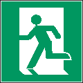 |
Bedeutung | Mit diesem Zeichen werden Flucht-/Rettungswege und Notausgänge gekennzeichnet. | |
| Gefahr | Ohne die Kennzeichnung könnten Beschäftigte im Notfall möglicherweise den Fluchtweg-/Rettungsweg in einen sicheren Bereich nicht finden. | ||
| Erwünschtes Verhalten | Die Beschäftigten wissen, welche Wege sie zur Flucht in einen sicheren Bereich nutzen sollen. | ||
| Hinweis(e) | |||
| Das Zeichen Rettungswg/Notausgang ist immer mit einem Zusatzeichen „Richtungspfeil“ zu kombinieren, da nur in dieser Kombination z. B. Laufrichtungen angezeigt werden können. In langgestreckten Räumen, z. B. Fluren kann es sinnvoll sein Winkelschilder zu verwenden. In Bereichen, ohne Sicherheitsbeleuchtung muss die Fluchtwegkennzeichnung langnachleuchtend ausgeführt sein. Es ist sicherzustellen, dass gekennzeichnete Notausgänge in einen sicheren Bereich führen. Die Kennzeichnung schreibt nicht vor, dass ausschließlich die so gekennzeichneten Wege/Notausgänge für eine Flucht genutzt werden sollen. Daher muss die Benutzung dieser Wege/Notausgänge in den Unterweisungen angewiesen werden. Die Kennzeichnung enthält keine Flammensymbole. | |||
| Beispiele für mögliche Kombinationen | |||
| Laufrichtung nach Links |
|||
Laufrichtung nach Links |
|||
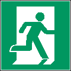 Laufrichtung nach Rechts |
|||
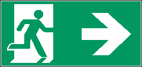 Laufrichtung nach Rechts |
|||
| Aufwärts |
|||
Aufwärts |
|||
| Rettungszeichen | |||
| E003 | Erste Hilfe | ||
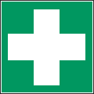 |
Bedeutung | Mit diesem Zeichen werden Orte gekennzeichnet an denen Erste-Hilfe-Ausrüstung/Einrichtungen vorhanden sind und/oder Personal zur Erbringung von Erste-Hilfe-Leistungen anzutreffen ist. | |
| Gefahr | Ohne die Kennzeichnung könnten Beschäftigte im Fall einer Verletzung nicht in der Lage sein, Erste-Hilfe-Ausrüstung/Einrichtungen und/oder Personal zur Erbringung von Erste-Hilfe-Leistungen zu finden. | ||
| Erwünschtes Verhalten | Die Beschäftigten wissen wo Erste-Hilfe-Ausrüstung/Einrichtungen und/oder Personal zur Erbringung von Erste-Hilfe-Leistungen zu finden sind. | ||
| Hinweis(e) | |||
| Das Zeichen kann mit Zusatzzeichen versehen werden, aus denen ersichtlich wird welche Erste-Hilfe-Ausrüstung/Einrichtung und/oder welches Personal zur Erbringung von Erste-Hilfe-Leistungen am jeweiligen Standort anzutreffen sind. | |||
| Beispiele für mögliche Kombinationen | |||
ISO 7010-E001 Notausgang (links) |
ISO 7010-E009 Arzt |
ISO 7010-E002 Notausgang (rechts) |
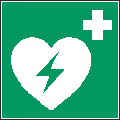 ISO 7010-E010 Automatisierter externer Defibrillator (AED) |
ISO 7010-E003 Erste Hilfe |
ISO 7010-E011 Augenspüleinrichtung |
ISO 7010-E004 Notruftelefon |
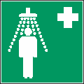 ISO 7010-E012 Notdusche |
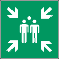 ISO 7010-E007 Sammelstelle |
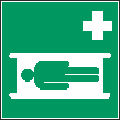 ISO 7010-E013 Krankentrage |
ISO 7010-E008 Notausgangsvorrichtung, die nach Zerschlagen einer Scheibe zu erreichen ist |
ISO 7010-E015 Trinkwasser |
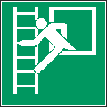 ISO 7010-E016 Notausstieg mit Fluchtleiter |
ISO 7010-E020 Not-Halt-Knopf |
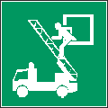 ISO 7010-E017 Rettungsausstieg |
ISO 7010-E022 Tür öffnet durch Drücken auf der linken Seite |
ISO 7010-E018 Öffnung durch Linksdrehung |
ISO 7010-E023 Tür öffnet durch Drücken auf der rechten Seite |
ISO 7010-E019 Öffnung durch Rechtsdrehung |
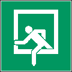 DIN 4844-2/ ISO 7010 D-E019 Notausstieg |